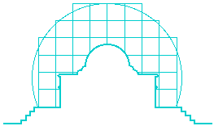
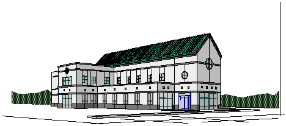
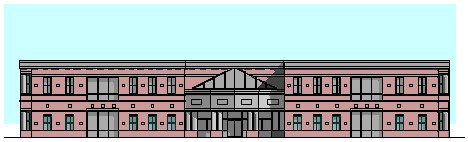
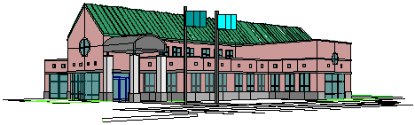
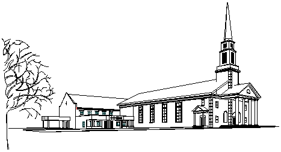
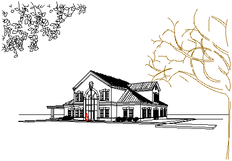

Firm History:..........................................
Firm History:.......................................... Design Philosophy:.................................
Principle Profile and Projects.....................
How To Contact Us:.................................

Firm History:..........................................
Design Philosophy:.................................
Principle Profile and Projects.....................
How To Contact Us:.................................
ROBERT E. MOORE. ARCHITECT FIRM HISTORY
ROBERT E. MOORE . ARCHITECT was formed in 1987 in Monroe, NC as full service Architecture firm. Since our formation we have designed projects throughout the Southeast with a concentration in commercial construction. These projects have varied in size and scale as well as contexts; urban, suburban, and rural. We have developed new buildings, additions to existing structures and renovations. These experiences have allowed us to respond to a variety of client needs and aspirations while developing designs of creative distinction.
Although our work is a collaboration of the client and our staff each project is managed by our principal in order to allow the client ease of access to decisions affecting their project.
We provide support for our clients in the form of programming, planning, design development, construction documents and administration. We use engineers as consultants in structural, plumbing, mechanical, and electrical engineering, allowing our firm to remain flexible in determining the best consultants for each project.
Our firm was recognized by METAL ARCHITECTURE magazine in with Honorable Mention Award in the Renovation category for a project in Charlotte, NC. This award was based on work throughout the United States. Although recognition by a national publication is welcome it is our belief that ultimately recognition through client satisfaction by quality design is our goal as well as the goal of all good architecture.

ROBERT E. MOORE.ARCHITECT DESIGN PHILOSOPHY AND APPROACH
Our approach to design begins with the client, and develops through our response to their needs, goals and aspirations. By working closely with each client we are able to respond to their concerns of program, site context, budget, as well as environmental concerns. Essential to this approach is the ability to listen. Only by listening can careful attention be given to the client's concerns. The response to these concerns can be a knowledgeable and creative translation of these concerns and aspirations into built form.
In a sense our approach is like an adventure in which we attempt to discover what is specific to the program, the client, the time and place of each project. In essence it is a search for what a building wants to be and what it can achieve.
As we have said our process begins with the client. After further development and enrichment of their program we develop alternative schemes that allow us to fully investigate the potentials of the site as a response to the program. Then together with the client we evaluate these alternatives to determine which one is most appropriate. Communication throughout this process is essential to success. Testing the alternatives with respect to program, budget, architectural character, and other concerns helps to assure a satisfactory response.
Since our formation we have purposely stayed away from developing a particular look or style. Instead we have attempted to develop an approach that allows the architectural character to evolve from all the relevant determinants. We believe the architectural character of a building can be as diverse as the institutions they serve. We hope our work will be recognized for its clean, fresh, and sincere qualities that reflect its cultural and geographic context.

ROBERT E. MOORE.ARCHITECT PRINCIPLE PROFILE
ROBERT E. MOORE,ARCHITECT
Monroe, North Carolina
Southern Financial Design
Monroe, North Carolina
Snoddy and McCulloch Associates Inc.
Charlotte, North Carolina
Overcash, Demmitt Architects
Charlotte, North Carolina
EDUCATION
University of North Carolina Charlotte, College of Architecture
Charlotte, North Carolina
Bachelor of Architecture
Bachelor of Arts in Architecture
University of North Carolina Charlotte, College of Social and Behavioral Science;
Bachelor of Arts Geography
PROFESSIONAL AND COMMUNITY AFFILIATIONS
American Institute of Architects,North Carolina Chapter AIA
National Council of Architectural Registration Board
Licensed in NC, SC, GA, FL, VA, AL, and TN.
Member Weddington United Methodist Church
Monroe-Union County Camber of Commerce
Volunteer Union County Public Schools
Volunteer Habitat for Humanity
Volunteer American Red Cross
University of North Carolina Charlotte Alumni Association
Member University of North Carolina Charlotte Athletic Association Member
Past Board of Directors; Self Help Credit Union, Charlotte, NC

ROBERT E. MOORE. ARCHITECT PROJECTS
*Principal Architect First National Bank, 90000 square feet branch in Orangeburg, SC
*Principal Architect Peoples Bank of Iva, 70000 square feet branch in Anderson, SC
*Principal Architect Wrens Baptist Church, 290000 square feet Education wing addition in Wrens GA
*Principal Architect Florence County National Bank, 90000 square feet Home Office in Florence, SC
*Principal Architect South Carolina Employees Federal Union, 20000 square feet addition to existing home office, Columbia, SC.
*Principal Architect Taylor house: Weddington, NC.
*Principal Architect Founder's Federal Union, Lancaster, SC, 5400 Square feet Branch.
*Principal Architect Peoples Federal Savings, 3000 Square Feet Branch in Florence, SC.
*Principal Architect Marine Federal Credit Union; 9000 square feet office in Jacksonville, NC.
*Principal Architect First National Bank; 20,000 square feet addition and renovation in Scotsboro, AL.
*Principal Architect Bank of Walterboro; 7,000 square feet home office in Walterboro, SC..
*Principal Architect SC. Moore house: Weddington, NC.
*Principal Architect SPC Credit Union; 3 story renovation of historic hotel in Hartsville, SC.
*Principal Architect Anderson Brothers Bank North Myrtle Beach, SC.
*Principal Architect First Federal of Charleston; new branch in historical district of Georgetown, SC.
*Principal Architect First Federal of Charleston; new branches in Summerville, Mt. Pleasant, and Charleston, SC.
*Principal Architect People's Bank; renovation of building destroyed by flooding in Elba, AL..
*Principal Architect North Carolina Federal Savings; 8 buildings ranging in size and function.
*Project Architect Dorn Banking Company; home office in McCormick, SC.
*Project Architect Darlington County Bank; home office in Darlington, SC..
*Project Designer Natatorium at Marion Diehl Center; 16,000
square feet addition including a Natatorium specifically for
physically handicapped population (while working at Snoddy and McCulloch Associates).
*Project Designer Belk Child Development Center; day care center at Alexander's Children Center (while working at Snoddy and McCulloch Associates).
*Project Designer Office Interiors; 20,000 square feet office, showroom, warehouse in Charlotte, NC.


How To Contact Us
If you require more information or need support for one of our products please send us an E-mail
or reach us by phone:
Mailing Address: 1800 Ashcraft Ave.
Monroe, NC
28110
E-mail Address: rema@perigee.net
Phone Number: (704) 283-1196
Fax Number: (704) 289-4422

Back To the Top
This Home Page was created with
AppleWorks 5